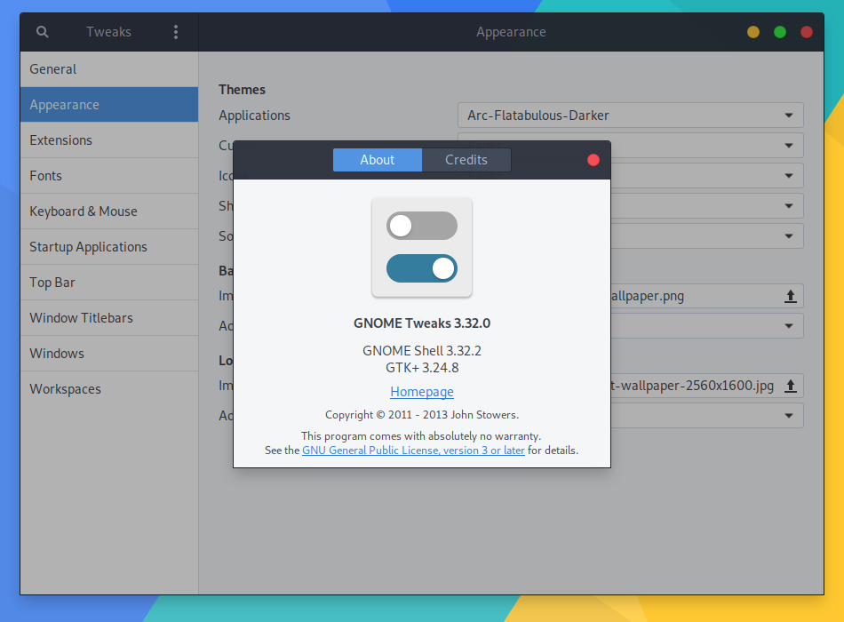
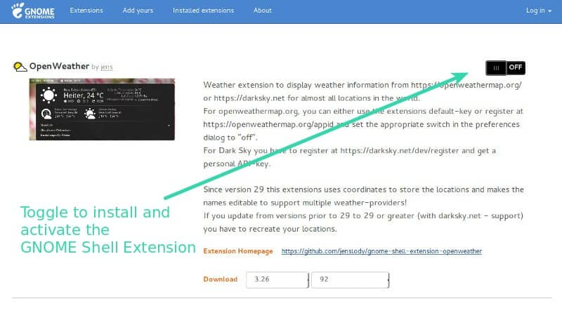
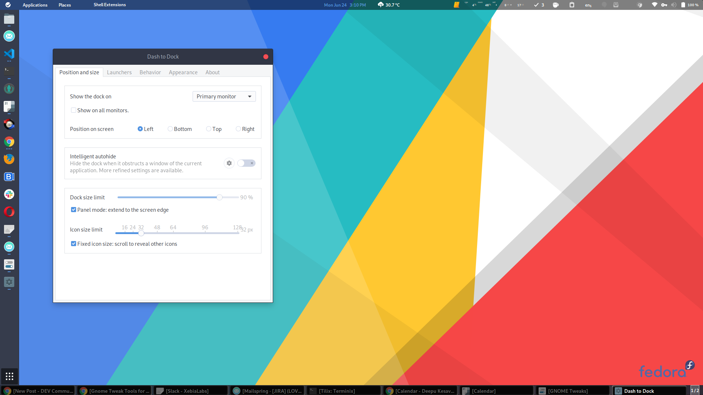
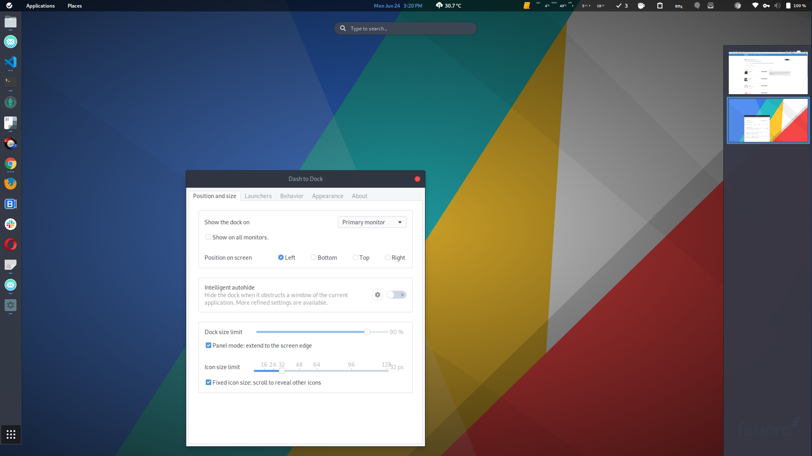
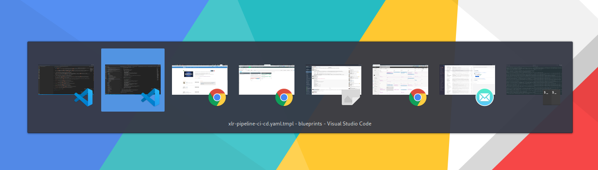
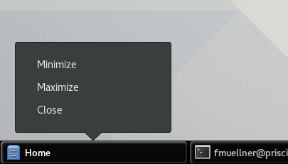
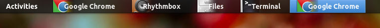
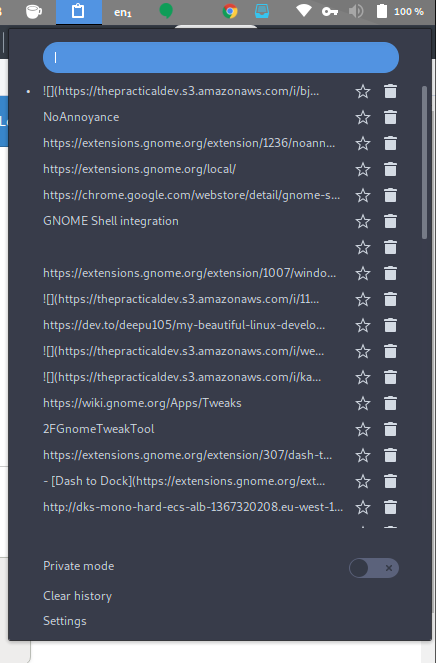
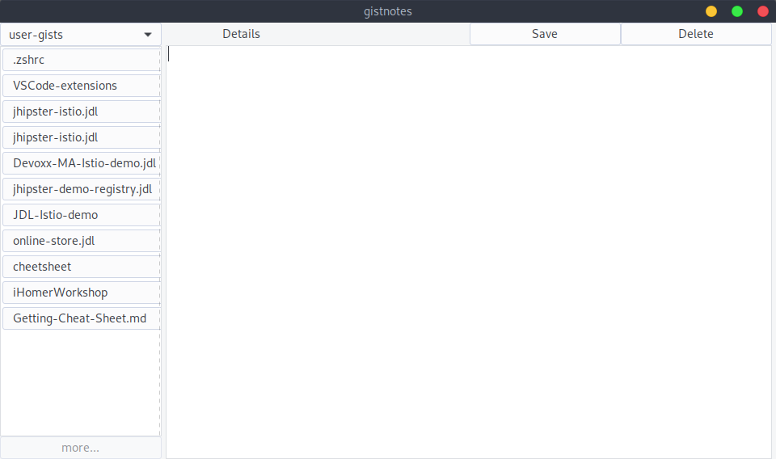
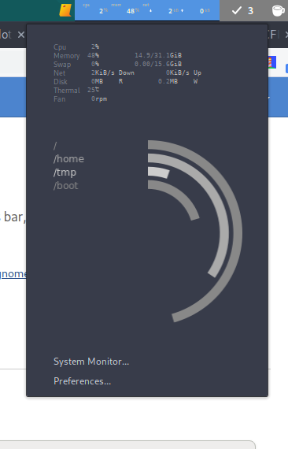

请输入密码以继续访问
我很喜欢漂亮的用户界面和出色的用户体验。虽然市面上有很多Linux桌面环境提供了出色的用户体验和用户界面，但我发现 GNOME 是我最喜欢的。我也发现了一些比GNOME更成熟的，并且提供了更好的默认用户体验的Linux系统，比如 Deepin 和 Elementary。但下面的插件弥补了这一缺陷，因此我选择坚持使用GNOME，GNOME是Fedora的默认桌面环境，因此相当稳定，除非我有一个令人信服的理由来更换他。
如果你像我一样是一个GNOME粉丝，那么下面是一些你必须尝试的GNOME插件。我已经在该系列的早期文章中列出了我使用的插件。这里我详细介绍一下那些我觉得是必备的插件。
通过使用 GNOME Tweaks 我们可以对GNOME进行大量配置，如自定义系统主题、图标、锁屏界面、字体、安装扩展、鼠标配置、键盘配置等等内容！
Tweaks 默认包含在 GNOME 的每个发行版中，您可以在您的发行版的软件中心中通过搜索“Tweaks”找到它。

在下面介绍的扩展中，您可以通过访问扩展名标题中的链接，单击右上角的开关来安装该扩展。
在Chrome上，您需要 GNOME Shell Integration插件以启用连接器。
在Firefox上，如果它不存在，它将提示您安装插件。

对于GNOME扩展的安装方法可参考文章 如何使用 GNOME Shell 扩展， 本处不做详细说明。
Dash to Dock 是一个用于 Gnome Shell 的 dock，用来调整与Dock相关的各种设置。
这个扩展将 GNOME dash 移动到一个可设置的dock(相当于Mac的程序坞)中，以便更容易地启动应用程序，更快地在 windows 和桌面之间切换。
这个程序坞可以设置放在屏幕的侧面或顶部、底部，我一般都是放在屏幕左侧。它可以设置成浮动模式的或固定模式。
通过设置可以达到类似于Mac程序坞的效果，很方便使用。

该扩展可确保工作区视图始终处于展开状态。
默认情况下，GNOME Launcher 未显示工作空间，您必须将鼠标悬停在右边缘上来查看它。我觉得这没有必要，工作区视图只占一点空间，而在你的屏幕上有足够的空间，默认展开即可。

这两个扩展可以忽略“Window is ready”通知，变成立即打开窗口。
如默认情况下每当我单击浏览器以外的任何应用程序上的链接时，会弹出通知 'Window is ready' ，但我并不想这样，我想直接打开浏览器访问。
要想改变这种情况您可以使用上述两个扩展的任何一个。
该扩展将默认的 Alt+Tab 替换为一个更经典的基于窗口的切换器，它对用户更加友好；因为默认情况下，需要使用箭头键进行更多的键盘导航。

这是一个经典的插件，它将窗口列表添加到屏幕的底部，用来展示最小化的窗口，不然你都不知道最小化后的窗口去哪了；你还可以使用快捷键将最小化的窗口重新打开。
如果你使用多个显示器，这是一个必须的插件，窗口会被分组并放置在右边的显示器屏幕上。


该扩展增加了暂时禁用屏保/自动休眠的功能，并在你进入全屏时自动激活。如果你用电脑看视频、演示、屏幕录制等，这是一个必备的工具。
这是我最喜欢的一个。它在顶部导航栏添加了一个漂亮的剪贴板管理器，会缓存剪贴板历史记录。并提供了循环浏览剪贴板条目的快捷方式。只需要点击该标识而后选择要使用的文本内容，再配合 Ctrl+V 即可完成历史文本复制。是一个真正的节省时间的方法。

作为一个经常使用GitHub gist的开发者，这个是一个非常有用的插件。它可以让你在桌面上直接管理你的Gist，你可以像笔记应用一样使用它。

一个很好的系统监控插件，位于顶栏，以弹出式的方式提供详细的视图。

希望这些扩展对你有用。如果你有任何问题，或者你认为我遗漏了什么，请添加评论。
本文译自文章Must have GNOME extensions
[1] GNOME: https://www.gnome.org/[2] Deepin: https://www.deepin.org/en/dde/[3] Elementary: https://elementary.io/[4] 该系列的早期文章: //wangmaolin.net/article/qk2vmqoyp0.html[5] GNOME Tweaks: https://wiki.gnome.org/Apps/Tweaks[6] GNOME Shell Integration: https://chrome.google.com/webstore/detail/gnome-shell-integration/gphhapmejobijbbhgpjhcjognlahblep[7] 如何使用 GNOME Shell 扩展: https://linux.cn/article-9447-1.html[8] Dash to Dock: https://extensions.gnome.org/extension/307/dash-to-dock/[9] Always Zoom Workspaces: https://extensions.gnome.org/extension/503/always-zoom-workspaces/[10] Steal My Focus: https://extensions.gnome.org/extension/234/steal-my-focus/[11] NoAnnoyance: https://extensions.gnome.org/extension/1236/noannoyance/[12] AlternateTab: https://extensions.gnome.org/extension/15/alternatetab/[13] Window List: https://extensions.gnome.org/extension/602/window-list/[14] Caffeine: https://extensions.gnome.org/extension/517/caffeine/[15] Clipboard Indicator: https://extensions.gnome.org/extension/779/clipboard-indicator/[16] Gistnotes: https://extensions.gnome.org/extension/917/gistnotes/[17] System-monitor: https://extensions.gnome.org/extension/120/system-monitor/[18] Must have GNOME extensions: https://deepu.tech/must-have-gnome-plugins/